Oracle Blockchain Platformで、ブロックチェーン台帳のデータを外部のOracle Databaseに複製する機能であるリッチヒストリーデータベース機能の設定方法を説明します。
この文書は、2022年11月時点での最新バージョン(22.3.2)を元に作成されています。
-
前提 :
- Oracle Blockchain Platform のインスタンス作成を完了
- 複製先のOracle Databaseの用意
- Oracle Blockchain Platformインスタンスからデータベースまでの接続（通信）が可能になっている必要があります
0. 前提の理解
0.1. リッチヒストリーデータベース機能の概要
Oracle Blockchain Platform（OBP）のリッチヒストリーデータベース機能は、OBPインスタンスの持つブロックチェーン台帳のデータをブロックチェーン外部のリレーショナルデータベース（Oracle Database）に複製する機能です。
Hyperledger Fabricに限らずブロックチェーンは一般にスマートコントラクト上（オンチェーン）での集計や分析などの複雑な参照処理を苦手としています。リッチヒストリーデータベース機能を用いることで、そうした処理をデータベース側で実装可能になります。
Oracle Database上にデータを複製したのちには、多くの開発者が慣れ親しんでいるPL/SQL言語や各種のBIツールを用いて容易に集計、分析が行えることになります。また、他データベースとのデータ統合も容易になり、データの価値を最大限に活用できるようになります。
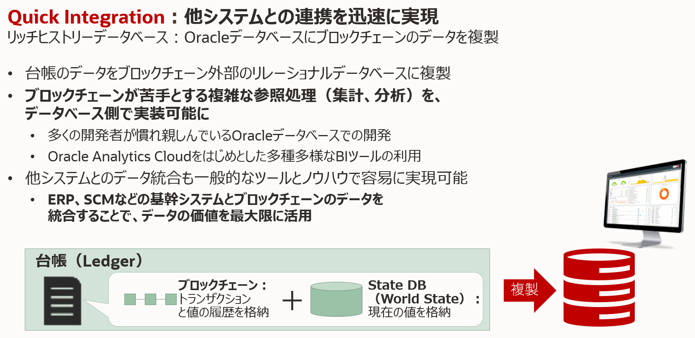
0.2. リッチヒストリーデータベースの設定のレベル
利用にあたっての複製先のデータベースに対しての接続設定が必要になります。以下のレベルでの設定が可能です。
- OBPインスタンス全体に対する設定
- Channelごとに設定……インスタンス全体に対する設定をオーバーライド
0.3. 複製されるテーブル
Hyperledger Fabricにおける台帳の単位、すなわちChannelごとにデータを複製します。複製先のデータベースでは、Channelごとにそれぞれ役割の異なるStateテーブル、Historyテーブル、Transaction Detailsテーブル（オプショナル）およびチェックポイントを保存するLastテーブルが自動的に作成され、データが書き込まれていきます。
テーブル名は {インスタンス名=Organization名}_{Channel名}_{テーブル種別} の規則で作成されます。テーブル種別は上記4つにつきそれぞれstate、history、more、lastです。

以下にLast以外のテーブルについて、それぞれに複製されるデータの内容を説明しています。
-
Stateテーブル
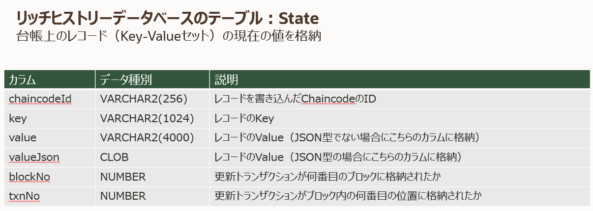
-
Historyテーブル
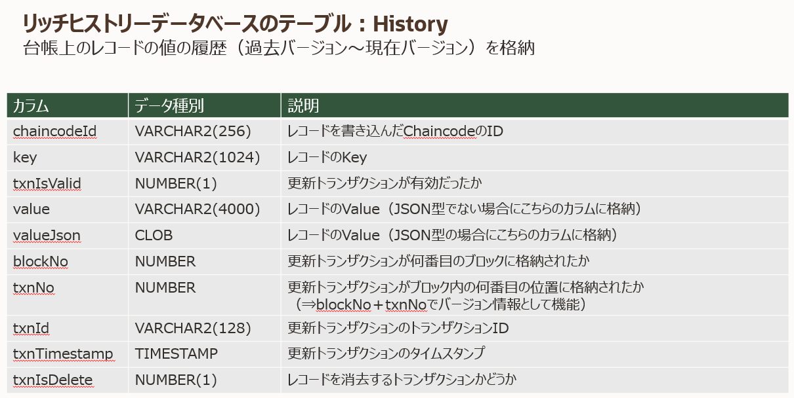
-
Transaction Detailsテーブル
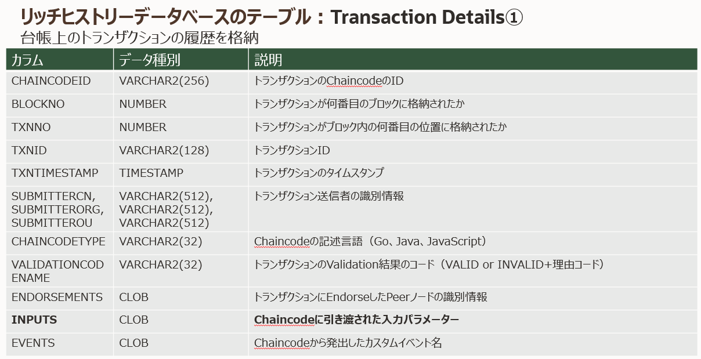 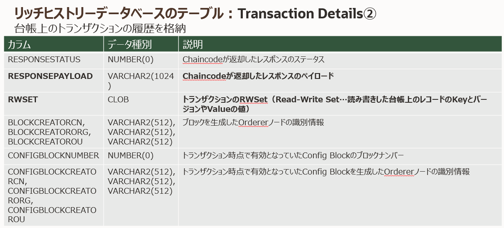
1. リッチヒストリーデータベースの設定方法
以下にインスタンス全体に対する設定、およびChannelごとの設定の方法をそれぞれ説明していきます。
1.1. インスタンス全体に対する設定方法
-
Oracle Blockchain Platformのサービス・コンソールを開きます。
-
コンソール上部右のメニューボタンをクリックし、Configure Rich Historyを選択します。
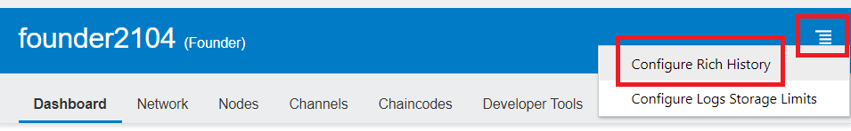
-
設定ダイアログが開きます。以下を適切に入力し、Saveボタンをクリックします。
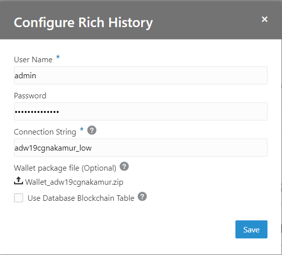
- User Name：接続先Oracle Databaseのデータベースユーザー名
- Password：↑のパスワード
- Connection String：接続先Oracle Databaseへの接続文字列
- Wallet package file：接続先がAutonomous Databaseの場合は、Walletファイルをアップロード
- Use Database Blockchain Table：チェックした場合、複製先の一部のテーブルにBlockchain Tableが使用される
なお、接続文字列について、
- 接続先がAutonomous Databaseの場合、Walletファイル内のtnsnames.oraに記載の接続識別子を使用します（例：
adw19cgnakamur_lowやadw19cgnakamur_high） - 接続先がAutonomous Databaseではない場合、
<publicIP>:<portNumber>/<database unique name>.<host domain name>の形式です（例：123.213.85.123:1521/CustDB_iad1vm.sub05031027070.customervcnwith.oraclevcn.com）
-
接続の検証が行われ、問題なければ以下のように成功メッセージが表示されます。その後ダイアログは数秒で自動的に閉じます。
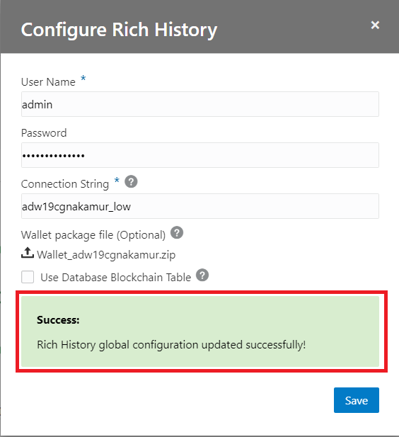
-
リッチヒストリーデータベースの設定変更後、当該Channelでの接続先データベースへの複製を開始させるために、当該Channelに参加しているPeerのうち少なくともひとつの再起動、もしくは当該Channelに新しいBlockが追加される（Transactionが発生する）ことが必要です。
Peerを再起動する場合は、コンソールのNodesページから対象のPeerの右側のメニューボタンをクリックし、Restartを選択し再起動してください。
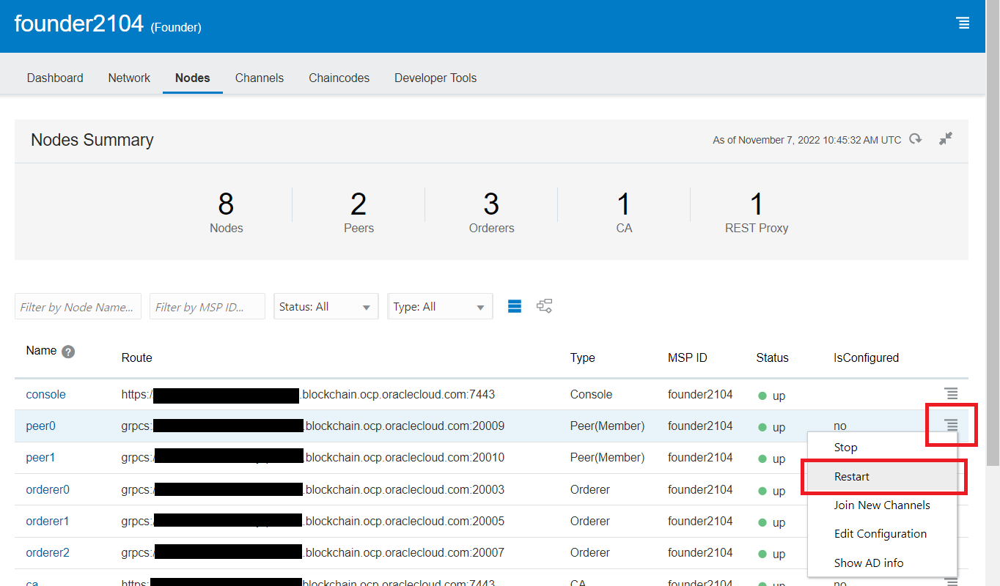
1.2. Channelごとの設定方法
-
Oracle Blockchain Platformのサービス・コンソールを開きます。
-
Channelsページに行き、対象のChannelの右側のメニューボタンをクリックし、Configure Rich Historyを選択します。
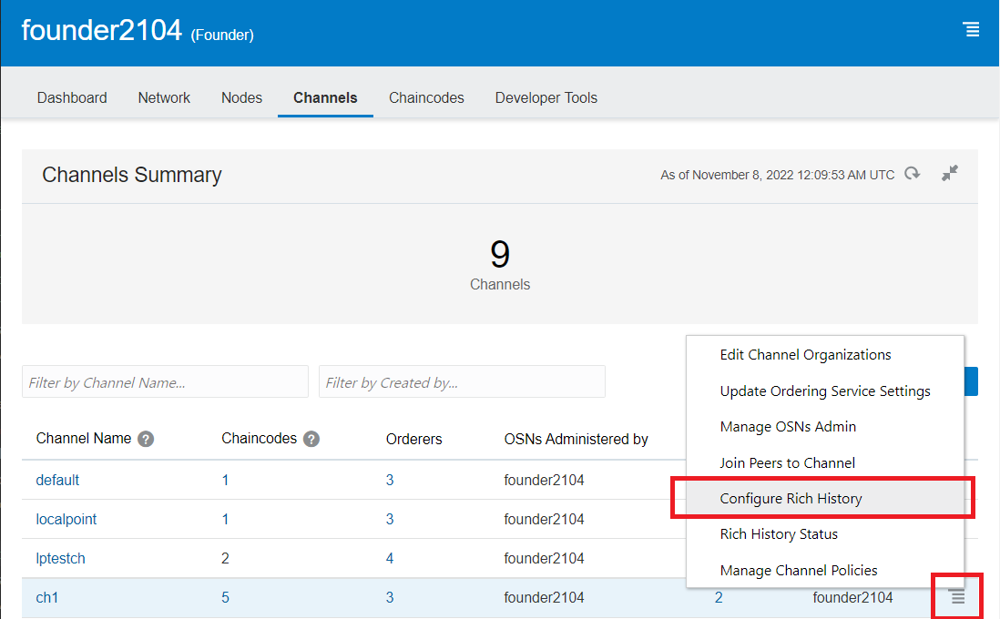
-
設定ダイアログが開きます。以下を入力し、Saveボタンをクリックします。
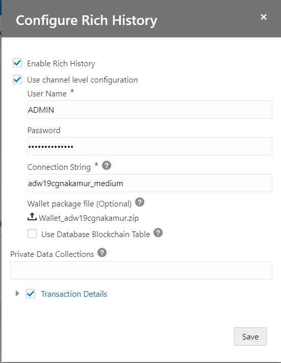
- Enable Rich History：チェックするとそのChannelでリッチヒストリーデータベース機能が有効に
- Use channel level configuration：チェックするとChannel単位の設定が利用可能に
- User Name：接続先Oracle Databaseのデータベースユーザー名
- Password：↑のパスワード
- Connection String：接続先Oracle Databaseへの接続文字列
- Wallet package file：接続先がAutonomous Databaseの場合、Walletファイルをアップロード
- Private Data Collections：指定したPrivate Data Collectionが複製の対象になる。”*（アスタリスク）”で全指定。
- Transaction Details：チェックするとTransaction Detailsテーブルへのトランザクション履歴の複製が有効になる。項目の取捨選択も可能。
-
接続の検証が行われ、問題なければ以下のように成功メッセージが表示されます。その後ダイアログは数秒で自動的に閉じます。
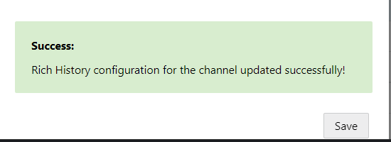
-
リッチヒストリーデータベースの設定変更後、当該Channelでの接続先データベースへの複製を開始させるために、当該Channelに参加しているPeerのうち少なくともひとつの再起動、もしくは当該Channelに新しいBlockが追加される（Transactionが発生する）ことが必要です。
Peerを再起動する場合は、コンソールのNodesページから対象のPeerの右側のメニューボタンをクリックし、Restartを選択し再起動してください。